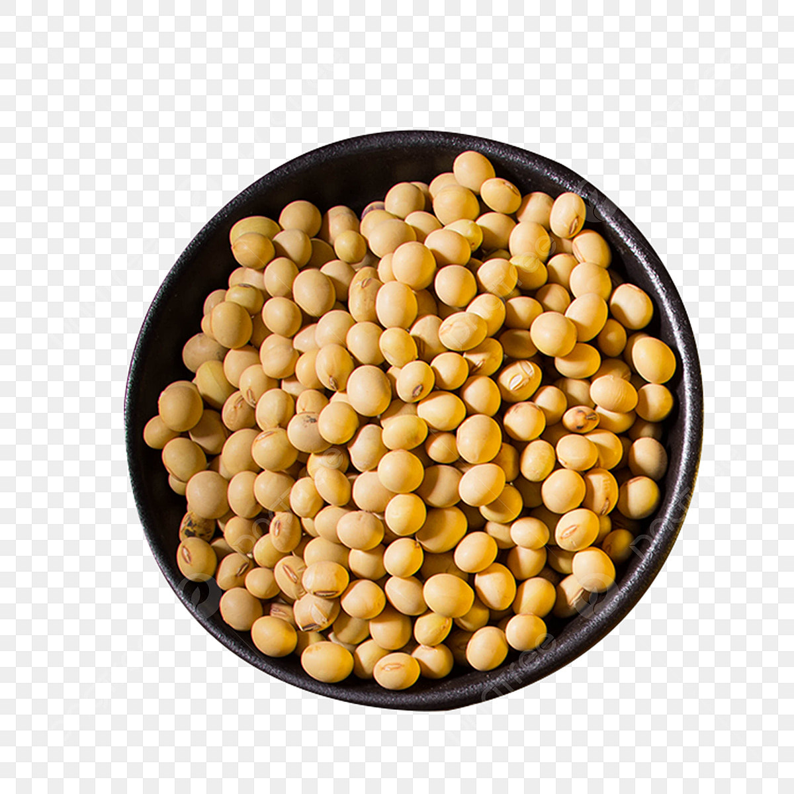

Formas de cultivo
tomate
A soja, originária da China Antiga e cultivada desde 2.383 a.C., chegou às Américas no século XVIII através de missionários jesuítas, adaptando-se bem ao Brasil, especialmente nas regiões Centro-Oeste e Sul. A produção comercial no país só se consolidou nas décadas de 1960 e 1970, após a redução da safra na Rússia e a demanda não suprida pelos EUA. A migração de produtores de café para a soja e o investimento em infraestrutura ajudaram a tornar o Brasil o maior produtor e exportador mundial da oleaginosa, responsável por 42% da produção global na safra 2022/2023.
A ecofisiologia da soja envolve a fotossíntese, que depende de luz solar, temperatura e umidade. O crescimento da planta é otimizado com a escolha adequada da época de semeadura para atender suas necessidades ambientais. O preparo do solo inclui análise para correção da acidez, adubação e práticas de conservação para evitar compactação e erosão, além da dessecação de plantas de cobertura para controlar pragas e doenças.
A implantação da lavoura de soja deve seguir o calendário de semeadura estabelecido pelo MAPA, após o vazio sanitário, e incluir tratamento e inoculação das sementes. A plantabilidade, que engloba a distribuição uniforme das sementes e profundidade de plantio, é crucial para garantir a produtividade.
Os tratos culturais e o manejo integrado de pragas e doenças são essenciais. A rotação de culturas, a escolha de variedades resistentes e o monitoramento constante são estratégias importantes. Entre as pragas estão lagartas, ácaros e percevejos, enquanto as doenças mais comuns incluem ferrugem asiática e manchas diversas. O controle é feito com práticas de manejo integrado e controle biológico, quando possível.
O manejo nutricional da soja abrange a aplicação de macronutrientes como nitrogênio, fósforo e potássio, além de micronutrientes como boro e cobalto. A nutrição adequada ajuda a planta a enfrentar estresses abióticos, como variações climáticas. Microrganismos benéficos, como fungos micorrízicos e solubilizadores de fósforo, também auxiliam na absorção de nutrientes e resistência a estresses.
Na pós-colheita, a soja deve ser colhida com umidade entre 13% e 15% para evitar deteriorações. O processamento e armazenamento adequados são cruciais para manter a qualidade dos grãos. O mercado da soja é globalmente influenciado pela oferta e demanda, com preços determinados pela Bolsa de Chicago e vulneráveis a eventos que afetem os principais países produtores e consumidores, como a China e os EUA.
